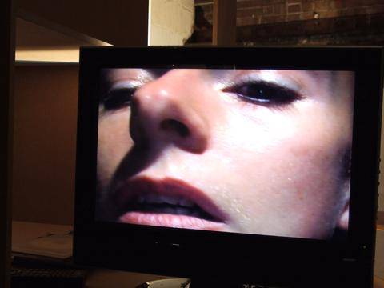
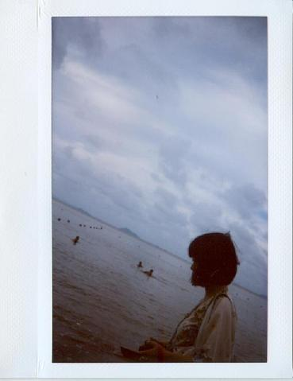
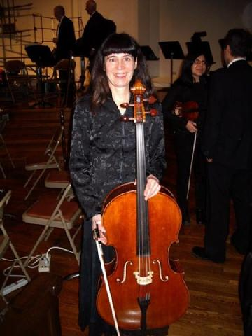
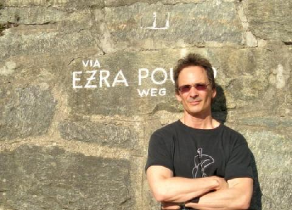
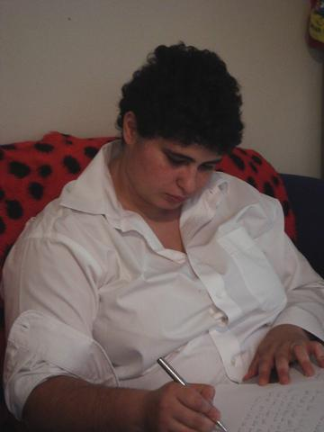
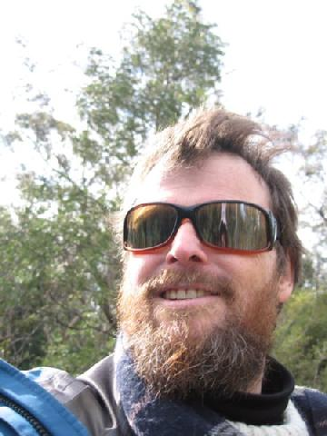
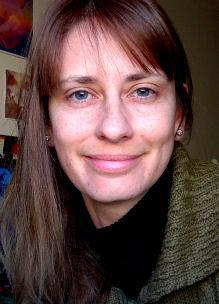
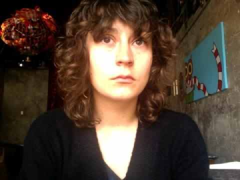
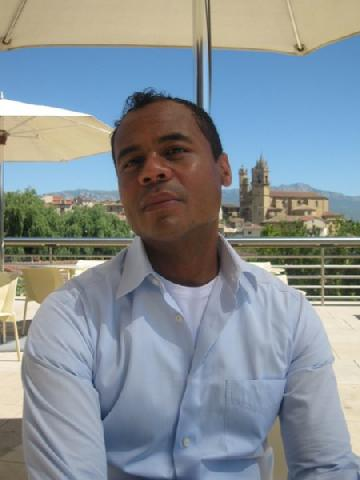
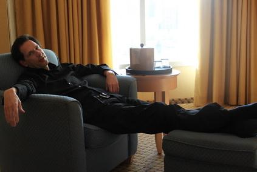

![Banner image for nebu[lab]](images/676_nebula735x155.png)
Contributors
07.2010

Cinzia Cremona is an artist and researcher whose intimate videoperformances focus on relationships, communication and interaction, forming an original body of work that extends into collaborative, participatory and networked practices. For the past four years, Cinzia Cremona has also been co-curating the annual moving image event Visions in the Nunnery at the Nunnery Gallery, London, as well as organizing events, discussions and forums, and publishing reviews and essays.

Iris Fan Xing is a postgraduate student in the English department at the University of Macau. Fan is also a poetry translator who has translated the works of women poets from the Tang Dynasty, and contemporary Australian poetry (especially the works of Aboriginal women poets).

Diane Frank is an award-winning poet and author of five books of poems, including Entering the Word Temple and The Winter Life of Shooting Stars. Her friends describe her as a harem of seven women in one very small body. She lives in San Francisco where she dances, plays cello, and creates her life as an art form. Diane teaches at San Francisco State University, leads workshops for young writers as a Poet in the School, and directs the Blue Light Press On-line Poetry Workshop. She is also a documentary scriptwriter with expertise in Eastern and sacred art. Blackberries in the Dream House, her first novel, won the Chelson Award for Fiction and was nominated for the Pulitzer Prize.

Forrest Gander's new books include Core Samples from the World (New Directions, 2011), Watchword, a translation of the Villaurrutia Award-winning collection by Pura Lopez Colome (Wesleyan, 2011), and a translation with Kyoko Yoshida of the selected poems of Kiwao Nomura, Spectacle & Pigsty (OmniDawn, 2011).

Samar Habib is the author of the novel A Tree Like Rain and the chapbook Islands in Space. She is also the author and editor of several works of non-fiction, including Female Homosexuality in the Middle East, and the two-volume collection Islam & Homosexuality. She is editor-in-chief of Nebula and publisher of African Nebula and nebu[lab].

Christopher (Kit) Kelen's most recent volumes of poetry are God Preserve Me from Those Who Want What's Best for Me, published in 2009 by Picaro Press (N.S.W, Australia) and In Conversation with the River, published in 2010 by VAC (Chicago, USA). For the last ten years Kelen has taught Literature and Creative Writing at the University of Macau in south China.

Helen Koukoutsis is a Critical and Cultural Studies scholar specialising in the areas of 19th century American poetry, in particular Emily Dickinson's verse, medieval mysticism/theology and Zen Buddhist philosophy. For the past 4 years, she has been teaching various literature-based subjects.

Dominika Ksel came from Poland in the early 80s and ended up in Gainesville as a result of communist dictatorship. She headed to Brooklyn as a teen in hopes of finding creative resolutions to the imbalances of the world. She completed her undergrad studies in documentary and video art and pursued an MFA in video, performance and installation at Hunter College. Her work deals with socio-political elements, manifesting possibilities for the future and investigating dimensions beyond the physics of reality through artistic experiments.
You know what Brendan Lorber's bio sounds like? It sounds like a man trying to convince the world of something he doesn't quite believe himself. What's left of him is a leaf that the wind blows from one gutter to another. He also edits LUNGFULL!, a journal of terrible mistakes, whose lousy personality can be briefly grieved over at: www.lungfull.org.
Donna Pucciani has published several hundred poems in the U.S., Europe, Australia and Asia, in such diverse journals as International Poetry Review, Spoon River Poetry Review, The Pedestal, Journal of the American Medical Association, and The Christian Century. Her books of poetry include The Other Side of Thunder, Jumping off the Train, and Chasing the Saints. She has been nominated three times for the Pushcart Prize and currently serves as Vice-President of the Poets Club of Chicago.
Michael Angelo Tata's poetry has most recently appeared in Gertrude, Frigg and Ugly Couch. He has contributed work on Daniel Paul Schreber to the collection Modernity and Neurology (Palgrave Macmillan) and on Jacques Derrida to the journal Parallax (Routledge). His Andy Warhol: Sublime Superficiality arrives from Intertheory Press in 2010.

Ronaldo V. Wilson is the author of Narrative of the Life of the Brown Boy and the White Man, winner of the 2007 Cave Canem Poetry Prize, and Poems of the Black Object, winner of the 2010 Thom Gunn Award. A co-founder of the Black Took Collective, he teaches creative writing, literature, and African American poetics at Mount Holyoke College.
Emanuel Xavier is author of the novel Christ Like and editor of Bullets & Butterflies and Mariposas: A Modern Anthology of Queer Latino Poetry. An award-winning poet, he has been featured on Russell Simmons presents Def Poetry, The New York Times, and CNN. He created the Glam Slam, first held at The Nuyorican Poets Cafe. His spoken word/music collaboration album Legendary was recently released on iTunes and his new poetry collection If Jesus Were Gay & Other Poems will be published in April 2011. Of Puerto Rican and Ecuadorian descent, he lives in Brooklyn, New York.
02.2011

Joe E. Jeffreys is a drag historian. He teaches Theatre Studies at New York University's Tisch School of the Arts Drama Department and has also taught at Stony Brook University, Purchase and Lehman College. He has published in encyclopedias, journals, including Women in Performance and Theatre History Studies, and in the popular press, from Time Out New York and The Village Voice to Out and The Advocate. He produces the series Drag Show Video Verité and his video shorts have been screened internationally. Photo taken by Ves Pitts.
Dana Lang is a singer/songwriter, poet and playwright who has written, directed and performed her work in New York City, where she lives and works as a freelance writer and editor. Dana earned her MFA in Playwriting at Brooklyn College, where she studied with master of experimental theater Mac Wellman, who greatly inspired the idea behind "Death Caps and the Jersey Devil." While her play somewhat departs from his evil prescription, it served as fertile ground for her to continue exploring and merging multiple narratives, characters and themes, with the resulting work still being largely Mac's fault.
Rose Wood is a performance artist who honed her craft in countless Downtown New York City clubs, and has since performed around the world. Her gender-bending acts have earned her much critical acclaim, including the "Most Exotic Moves" award at the 2006 Exotic World Competition and NY Press' "Best of New York" in 2008. She has also appeared in numerous films and has been profiled in the award-winning documentaries "What's in a Name" and "Shape of the Shapeless." She currently divides her time between New York and London.